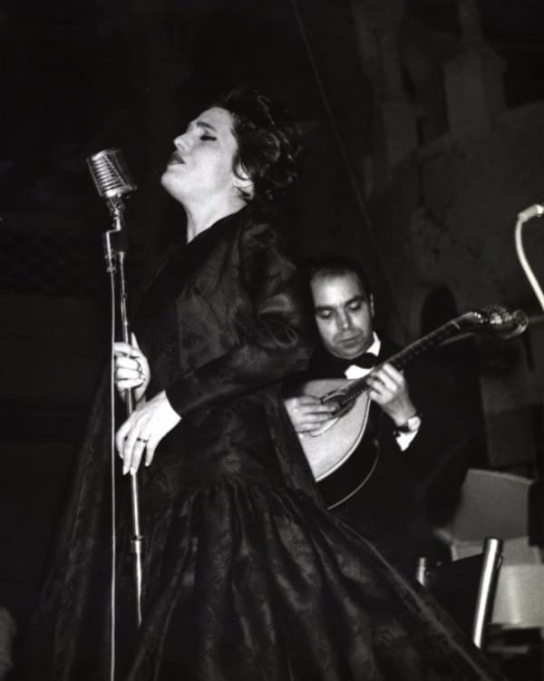
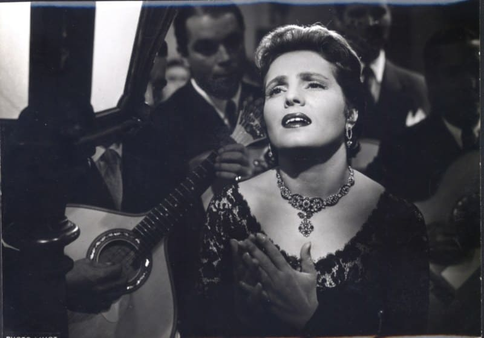
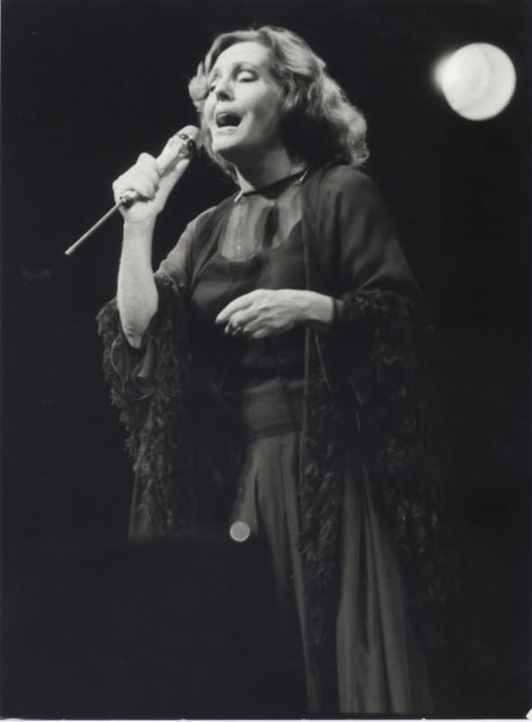

Amália Rodrigues, nascida em julho de 1920, é a figura incontornável do Fado e uma das maiores vozes de Portugal. Nascida em Lisboa, a sua infância foi marcada por desafios e superações, tendo sido criada pelos avós em Alcântara, onde o seu amor pela música floresceu. Desde cedo, Amália encantou quem a ouvia com a sua voz única e expressiva, tornando-se a "rainha" do Fado a nível nacional e internacional.


Amália cresceu num ambiente simples, onde desde muito jovem demonstrou um forte interesse pelo canto. Aos 14 anos, foi descoberta a cantar o "Fado Alcântara" nas festividades dos Santos Populares e, logo depois, iniciou a sua carreira de cantora. Sua trajetória profissional começou a deslanchar nos anos finais da década de 1930, quando começou a atuar em locais prestigiados de Lisboa, como o Retiro da Severa e o Solar da Alegria.
A partir de 1940, Amália Rodrigues começou a conquistar um lugar de destaque no mundo artístico português. Em 1941, a sua voz foi ouvida em todo o país e a popularidade da mesma cresceu rapidamente. A sua associação com nomes importantes do Fado, como o guitarrista Santos Moreira, ajudou a consolidar a própria carreira. Em 1949, Amália começou a atuar em algumas das mais renomadas salas de Lisboa, como o Café Luso, onde passou a ser a principal atração.


Na década de 1940, Amália começou a expandir a sua carreira para o estrangeiro, atuando em países como Espanha e Brasil. Com o tempo, as suas "tours" levaram-na para todos os cantos do mundo, incluindo Estados Unidos, França, Japão e África. As atuações em cidades como Nova Iorque, Paris e Rio de Janeiro tornaram-na uma embaixadora do Fado e da cultura portuguesa.
Amália Rodrigues não foi apenas uma intérprete extraordinária, mas também uma inovadora no universo do Fado. A sua postura em palco, o uso do xaile negro e o seu posicionamento em relação aos guitarristas tornaram-se símbolos da sua identidade artística. Ela também introduziu poemas eruditos no repertório do Fado, colaborando com poetas de renome como Pedro Homem de Mello, David Mourão-Ferreira e José Régio. Amália foi também pioneira na gravação de álbuns com compositores como Alain Oulman, cujas "óperas" de Fado continuam a ser referências até hoje.


Amália Rodrigues também se destacou no cinema e no teatro. A sua estreia no cinema aconteceu em 1947 com o filme Capas Negras, e ao longo dos anos, participou em diversos filmes e peças de teatro. Entre os destaques, estão os filmes Fado, História de uma Cantadeira e Les Amants du Tage, que tornaram-na uma figura familiar não só em Portugal, mas também noutras partes do mundo.
Amália Rodrigues foi reconhecida durante toda a sua vida com inúmeras homenagens. Entre as mais notáveis, destacam-se as medalhas e condecorações, como o grau de Cavaleiro da Ordem de Santiago de Espada e a Grã Cruz da Ordem de Santiago de Espada. Após a morte de Amália, em 1999, a memória e legado da mesma, continuaram a ser celebrados, com a criação da Fundação Amália Rodrigues e várias exposições que mantêm viva a presença da intérprete no coração da cultura portuguesa.
